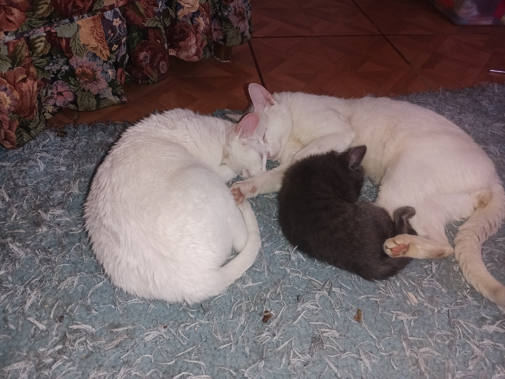

Protección y Adopción de Animales en la Comunidad
Facilitamos la adopción responsable de animales en situación de calle y gestionamos suministros para brindarles un hogar digno.
Nuestro Propósito
El Proyecto PAEC nace con la misión de transformar la vida de perros y gatos vulnerables. Buscamos concientizar sobre el abandono animal, promover la cultura de la adopción frente a la compra y coordinar esfuerzos comunitarios para mantener centros de rescate equipados y limpios.
Concientización sobre el Bienestar Animal
Un animal de compañía requiere compromiso, tiempo y cuidado médico. Cuando adoptas, no solo salvas una vida, sino que abres un espacio para rescatar a otro animal que lo necesita.

"Todos merecen la tranquilidad de un hogar seguro."